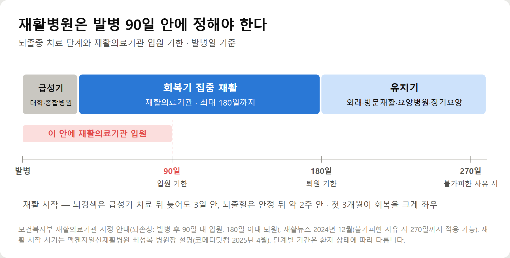
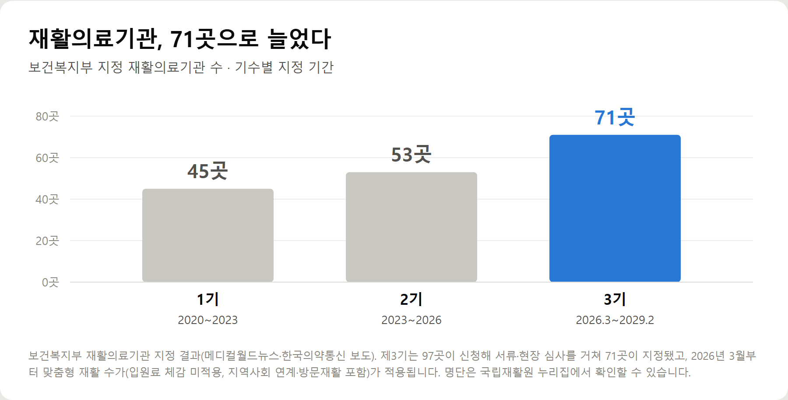
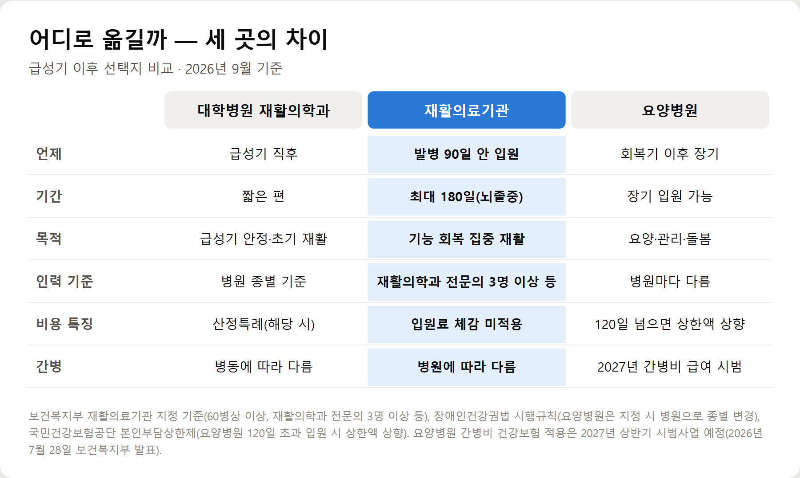
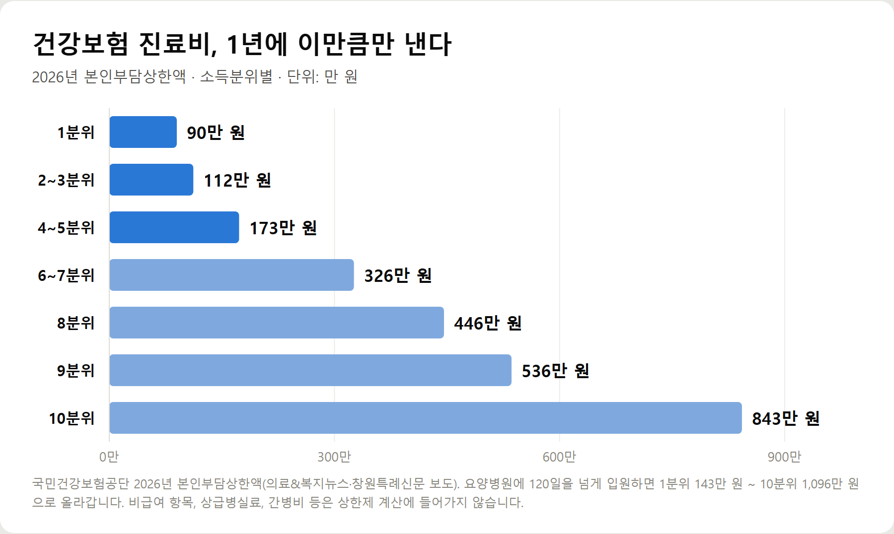

<meta charset="utf-8">
<title>뇌졸중 재활병원 고르는 법과 비용 — 나의 투자 그리고 행복한 여행</title>
<meta name="description" content="뇌졸중 재활병원 고르는 법: 재활의료기관 입원 기준(발병 90일·최대 180일), 제3기 71곳, 요양병원 차이, 2026 본인부담상한액과 요양병원 간병비 건강보험 적용 계획을 정리했습니다.">
<meta name="viewport" content="width=device-width, initial-scale=1">
<link rel="canonical" href="https://worldtraveler1.tistory.com/64">
<link rel="preconnect" href="https://fonts.googleapis.com">
<link rel="preconnect" href="https://fonts.gstatic.com" crossorigin>
<link rel="stylesheet" href="https://fonts.googleapis.com/css2?family=Hahmlet:wght@400;600;800&family=IBM+Plex+Mono:wght@400;500&family=IBM+Plex+Sans+KR:wght@300;400;500;600&display=swap">

<style>
  :root{
    --paper:#F2EEE6;--surface:#FAF8F3;--surface-2:#E7E1D5;
    --ink:#191510;--ink-2:#4A4235;--ink-3:#7D7364;
    --line:#D6CEBF;--line-soft:#E4DDD0;--accent:#B06A15;--accent-bright:#C2761A;
    --up:#E5484D;--down:#3B82F6;
    --f-display:"Hahmlet",'Nanum Myeongjo',"Apple SD Gothic Neo",serif;
    --f-body:"IBM Plex Sans KR","Apple SD Gothic Neo","Malgun Gothic",sans-serif;
    --f-mono:"IBM Plex Mono","SFMono-Regular",Consolas,monospace;
    --pad:clamp(20px,5vw,64px);
  }
  @media (prefers-color-scheme:dark){
    :root:not([data-theme="light"]){
      --paper:#0B1120;--surface:#121A2C;--surface-2:#1A2439;
      --ink:#E9EEF7;--ink-2:#A9B5C9;--ink-3:#72809A;
      --line:#26314A;--line-soft:#1D2739;--accent:#E8A33D;--accent-bright:#F0B45C;
    }
  }
  *{box-sizing:border-box;}
  body{margin:0;background:var(--paper);color:var(--ink);font-family:var(--f-body);
    font-weight:300;font-size:1rem;line-height:1.75;-webkit-font-smoothing:antialiased;}
  a{color:inherit;}
  img{max-width:100%;height:auto;}
  .wrap{max-width:760px;margin:0 auto;padding-inline:var(--pad);}
  .nav{position:sticky;top:0;z-index:20;background:color-mix(in srgb,var(--paper) 88%,transparent);
    backdrop-filter:saturate(180%) blur(12px);border-bottom:1px solid var(--line);}
  .nav-in{display:flex;align-items:center;justify-content:space-between;height:58px;}
  .brand{font-family:var(--f-display);font-weight:600;font-size:1rem;letter-spacing:-.02em;text-decoration:none;}
  .back{font-family:var(--f-mono);font-size:.72rem;color:var(--ink-3);text-decoration:none;}
  .article{padding-block:clamp(40px,7vw,72px) clamp(56px,9vw,96px);}
  .eyebrow{font-family:var(--f-mono);font-size:.68rem;letter-spacing:.16em;text-transform:uppercase;
    color:var(--accent);margin:0 0 14px;}
  h1{font-family:var(--f-display);font-weight:800;font-size:clamp(1.6rem,4.4vw,2.3rem);
    line-height:1.3;letter-spacing:-.03em;margin:0 0 16px;}
  .byline{font-family:var(--f-mono);font-size:.72rem;color:var(--ink-3);
    padding-bottom:24px;border-bottom:1px solid var(--line);margin-bottom:32px;}
  h2{font-family:var(--f-display);font-weight:600;font-size:1.25rem;letter-spacing:-.02em;margin:42px 0 14px;}
  h3{font-family:var(--f-display);font-weight:600;font-size:1.05rem;letter-spacing:-.02em;
    margin:30px 0 10px;padding-top:14px;border-top:1px solid var(--line-soft);}
  h3 .code{font-family:var(--f-mono);font-size:.7rem;font-weight:400;color:var(--ink-3);margin-left:6px;}
  p{margin:0 0 18px;color:var(--ink-2);}
  ul.checks{margin:0 0 18px;padding-left:20px;color:var(--ink-2);}
  ul.checks li{margin-bottom:8px;font-size:.94rem;}
  table{width:100%;border-collapse:collapse;font-size:.88rem;margin-bottom:8px;}
  th{font-family:var(--f-mono);font-size:.66rem;letter-spacing:.06em;text-transform:uppercase;
    color:var(--ink-3);text-align:right;padding:8px 6px;border-bottom:1px solid var(--line);}
  th:first-child{text-align:left;}
  td{padding:10px 6px;border-bottom:1px solid var(--line-soft);color:var(--ink-2);}
  td.num{font-family:var(--f-mono);text-align:right;font-variant-numeric:tabular-nums;}
  td.up{color:var(--up);} td.down{color:var(--down);}
  .scroll{overflow-x:auto;}
  figure{margin:22px 0;}
  figure img{display:block;border-radius:3px;background:var(--surface-2);}
  figcaption{margin-top:8px;font-family:var(--f-mono);font-size:.68rem;color:var(--ink-3);text-align:center;}
  .note{margin-top:34px;padding:16px 18px;border-left:3px solid var(--accent);
    background:var(--surface);border-radius:0 3px 3px 0;}
  .note p{margin:0;font-size:.85rem;color:var(--ink-3);}
  .foot{border-top:1px solid var(--line);background:var(--surface);padding-block:30px 38px;}
  .foot p{margin:0;font-size:.8rem;color:var(--ink-3);}
</style>

<nav class="nav">
  <div class="wrap nav-in">
    <a class="brand" href="../index.html">나의 투자 그리고 행복한 여행</a>
    <a class="back" href="../index.html#stocks">← 시황으로</a>
  </div>
</nav>

<main class="wrap article">
  <p class="eyebrow">Market</p>
  <h1>뇌졸중 재활병원 정리 — 재활의료기관 입원 기준, 요양병원 차이, 본인부담상한제·간병비 (2026)</h1>
  <p class="byline">건강 · 2026-09-14 기준</p>

  <p>한 줄 요약: 뇌졸중 환자는 발병 90일 안에 보건복지부 지정 재활의료기관(2026년 71곳)에 입원하면 최대 180일간 입원료 삭감 없이 집중 재활을 받을 수 있습니다. 비용은 본인부담상한제로 1년 한도가 정해지고, 요양병원 간병비는 2027년 상반기부터 중증 환자부터 건강보험 시범 적용이 추진됩니다.</p>
  <p>보건복지부 재활의료기관 지정 기준, 2026년 제3기 지정 결과, 2026년 7월 간병비 급여화 발표를 바탕으로 정리한 기록입니다.</p>
  <h2>핵심만 먼저</h2>
  <ul class="checks">
    <li>재활의료기관 — 보건복지부가 시설·인력 기준으로 지정한 회복기 재활 전문 병원. 2026년 3월부터 71곳입니다</li>
    <li>입원 기한 — 뇌졸중 등 뇌손상은 발병 후 90일 안에 입원, 180일 안에 퇴원이 기준입니다</li>
    <li>장점 — 정해진 기간 동안 입원료가 깎이지 않아 조기 퇴원 압박 없이 재활을 받을 수 있습니다</li>
    <li>요양병원과 차이 — 요양병원은 장기 요양·관리 중심, 재활의료기관은 기능 회복 중심입니다</li>
    <li>비용 — 건강보험 진료비는 본인부담상한제로 1년 한도가 있고, 간병비는 따로 듭니다</li>
  </ul>
  <h2>1. 뇌졸중 재활의 골든타임 — 왜 첫 3개월인가</h2>
  <figure><figcaption>뇌졸중 치료 단계와 재활의료기관 입원 기한 — 발병 90일 안 입원, 180일 안 퇴원 (보건복지부)</figcaption></figure>
  <p>뇌졸중으로 손상된 뇌는 주변 신경망이 역할을 나눠 맡으며 기능을 되찾아 갑니다. 이 회복은 발병 초기에 가장 빠르게 일어납니다.</p>
  <p>부산 맥켄지일신재활병원 최성복 병원장(재활의학과)은 "재활 치료의 성패는 발병 후 첫 3개월을 어떻게 보냈느냐에 달려 있다"고 말합니다(코메디닷컴, 2025년 4월). 뇌경색은 급성기 치료 뒤 늦어도 3일 안에, 뇌출혈은 내과적으로 안정된 뒤 약 2주 안에 재활을 시작하는 것이 좋다는 설명입니다.</p>
  <p>6개월이 지나면 회복 속도가 느려지지만 멈추는 것은 아닙니다. 다만 가장 많이 좋아질 수 있는 시기를 어디에서 보내느냐가 중요합니다.</p>
  <p>치료는 보통 세 단계로 이어집니다. 대학병원·종합병원의 급성기 치료, 재활의료기관의 회복기 집중 재활, 그리고 외래·방문재활·요양병원·장기요양으로 이어지는 유지기입니다.</p>
  <h2>2. 재활의료기관이란 — 입원 기준과 기간</h2>
  <p>재활의료기관은 보건복지부가 '회복기 집중 재활'을 맡기려고 지정하는 병원입니다. 60병상 이상, 재활의학과 전문의 3명 이상(지역에 따라 2명), 물리·운동·작업치료실 같은 필수 시설, 전문의·간호사·치료사 1인당 환자 수 기준을 갖춰야 합니다.</p>
  <ul class="checks">
    <li>뇌졸중·뇌손상·척수손상 — 발병(수술) 후 90일 안에 입원, 최대 180일</li>
    <li>고관절·골반·대퇴 단일 골절, 고관절 치환술 — 30일 안 입원, 최대 30일</li>
    <li>위 부위 2곳 이상 골절, 하지 절단 — 60일 안 입원, 최대 60일</li>
    <li>급성 질환·수술로 기능이 떨어진 비사용증후군 — 60일 안 입원, 최대 60일</li>
  </ul>
  <p>뇌졸중 같은 중추신경계 환자는 불가피한 사유가 인정되면 발병일로부터 270일까지 적용될 수 있습니다(재활뉴스, 2024년 12월). 하지만 기본은 '90일 안 입원'으로 생각하고 움직이는 편이 안전합니다.</p>
  <p>가장 큰 차이는 입원료입니다. 일반 병원은 입원이 길어질수록 입원료가 깎여(입원료 체감제) 병원이 오래 입원시키기 어렵습니다. 재활의료기관은 환자군별 인정 기간 동안 이 삭감이 적용되지 않습니다. 가족 입장에서는 '곧 나가야 한다'는 압박 없이 한 곳에서 재활을 이어갈 수 있다는 뜻입니다.</p>
  <h2>3. 재활의료기관, 3년 새 71곳으로</h2>
  <figure><figcaption>보건복지부 지정 재활의료기관 수 — 1기 45곳, 2기 53곳, 3기 71곳</figcaption></figure>
  <p>재활의료기관은 1기(2020~2023년) 45곳, 2기(2023~2026년) 53곳에서 3기(2026년 3월~2029년 2월) 71곳으로 늘었습니다. 3기에는 97곳이 신청해 서류·현장 심사를 거쳐 71곳이 지정됐습니다.</p>
  <p>3기부터는 '맞춤형 재활 수가'가 적용됩니다. 집중 재활치료료, 통합 계획 관리, 기능 평가, 퇴원 뒤 지역사회 연계와 방문재활이 수가에 포함돼, 퇴원 이후까지 이어지는 관리를 병원이 맡도록 했습니다.</p>
  <p>지정 명단은 국립재활원 누리집 '재활의료기관 지정사업' 자료실에 공개돼 있습니다. 서울에는 국립재활원, 서울재활병원, 명지춘혜재활병원 등이 포함됐고, 지역별로 분포가 달라 사는 곳 가까운 곳을 먼저 확인하는 것이 좋습니다.</p>
  <h2>4. 재활의료기관 vs 요양병원 vs 대학병원 재활의학과</h2>
  <figure><figcaption>재활의료기관·요양병원·대학병원 재활의학과 비교</figcaption></figure>
  <ul class="checks">
    <li>대학병원·종합병원 재활의학과 — 급성기 직후 짧게. 중증 환자 중심이라 입원 기간이 길지 않은 편입니다</li>
    <li>재활의료기관 — 발병 90일 안 입원, 최대 180일 집중 재활. 전문의·치료사 인력 기준이 정해져 있습니다</li>
    <li>요양병원 — 장기 입원·요양 중심. 재활치료를 하는 곳도 있지만 인력·시간 기준이 병원마다 다릅니다</li>
    <li>외래·방문재활 — 걸어서 다닐 수 있거나 집에서 지낼 수 있을 때. 3기 재활의료기관은 퇴원 환자 방문재활도 합니다</li>
  </ul>
  <p>이름만으로는 헷갈릴 수 있습니다. 재활의료기관은 의료법상 '병원'이어야 하고, 요양병원이 지정을 받으려면 병원으로 종별을 바꿔야 합니다(장애인건강권법 시행규칙). 이름에 '재활'이 들어가도 지정 병원이 아닌 곳이 있으니 명단으로 확인해야 합니다.</p>
  <p>요양병원이 나쁜 선택이라는 뜻은 아닙니다. 회복기가 지난 뒤 장기적인 관리와 돌봄이 필요할 때는 요양병원이 맞는 경우가 많습니다. 다만 발병 초기의 몇 달을 어디서 보낼지는 따로 따져 봐야 합니다.</p>
  <h2>5. 비용 — 진료비는 상한이 있고, 간병비가 변수</h2>
  <figure><figcaption>2026년 본인부담상한액 — 소득분위별 1년 한도 (국민건강보험공단)</figcaption></figure>
  <p>재활 입원 비용은 크게 세 가지입니다. 건강보험 적용 진료비의 본인부담, 비급여 항목, 그리고 간병비입니다.</p>
  <p>건강보험 진료비는 본인부담상한제로 1년 한도가 정해져 있습니다. 2026년 상한액은 소득 1분위 90만 원, 2~3분위 112만 원, 4~5분위 173만 원, 6~7분위 326만 원, 8분위 446만 원, 9분위 536만 원, 10분위 843만 원입니다. 이를 넘은 금액은 건강보험공단이 돌려줍니다.</p>
  <p>요양병원은 다릅니다. 요양병원에 120일을 넘게 입원하면 상한액이 1분위 143만 원에서 10분위 1,096만 원으로 올라가고, 병원에서 바로 상한을 적용받는 사전급여에서도 빠집니다. 장기 입원을 줄이려는 장치입니다.</p>
  <p>비급여와 간병비는 상한제에 들어가지 않습니다. 상급병실료, 일부 도수치료 같은 비급여 항목과 개인 간병비는 전액 가족 부담이라, 실제 지출은 여기서 크게 갈립니다.</p>
  <h2>6. 간병비 — 2027년부터 요양병원 건강보험 시범 적용</h2>
  <p>보건복지부는 2026년 7월 28일 요양병원 간병비에 건강보험을 적용하는 방안을 발표했습니다. 2027년 상반기부터 시범사업을 시작해, 의료·간병 필요도가 높은 환자의 간병비 본인부담을 지금의 100%에서 30% 안팎으로 낮추겠다는 계획입니다.</p>
  <ul class="checks">
    <li>대상 병원 — 100병상 이상에 인증·인력 등 요건을 갖춘 '의료중심 요양병원'부터 (약 500곳 선정 계획)</li>
    <li>대상 환자 — 중증·희귀난치질환자, 치매·파킨슨병 환자, 장기요양 1·2등급 입원 환자 등 우선</li>
    <li>규모 — 단계적으로 최대 8만 5천 명까지 확대</li>
    <li>지금 수준 — 공동간병 월 60만~90만 원, 단독 간병인 월 370만 원가량 (서울신문, 2026년 7월)</li>
  </ul>
  <p>아직 시범사업 계획 단계라 모든 요양병원, 모든 환자에게 적용되는 것은 아닙니다. 병원을 고를 때는 공동간병인지 개인간병인지, 간호·간병통합서비스 병동이 있는지, 간병비가 한 달에 얼마인지를 반드시 따로 물어봐야 합니다.</p>
  <h2>7. 재활병원 고르는 체크리스트</h2>
  <p>상담이나 방문 때 아래를 확인하면 병원 사이의 차이가 드러납니다. 광고 문구보다 이 답이 더 정확합니다.</p>
  <ul class="checks">
    <li>보건복지부 지정 재활의료기관인가 — 지정 기간(3기: 2026년 3월~2029년 2월)을 확인합니다</li>
    <li>지금 입원하면 입원 기한 안인가 — 발병일 기준 며칠째인지 계산해 둡니다</li>
    <li>하루 재활치료는 몇 시간, 어떤 종류인가 — 물리·작업·언어·삼킴(연하) 치료가 모두 되는지</li>
    <li>재활의학과 전문의 수와 치료사 1인당 환자 수는 — 지정 기준 항목이라 물어볼 수 있습니다</li>
    <li>간병은 어떤 방식이고 월 얼마인가 — 공동간병·개인간병·간호간병통합서비스 여부</li>
    <li>비급여 항목은 무엇이고 한 달에 얼마인가 — 권유받는 비급여 치료는 목록과 금액을 받아 둡니다</li>
    <li>퇴원 뒤 연계는 되는가 — 외래, 방문재활, 지역사회 돌봄 연계 여부</li>
  </ul>
  <h2>놓치기 쉬운 부분 — 대학병원에 있을 때 이미 시작해야 한다</h2>
  <p>많은 가족이 대학병원에서 퇴원 통보를 받은 뒤에야 재활병원을 찾기 시작합니다. 그때부터 알아보면 원하는 곳에 자리가 없거나, 급한 대로 가까운 곳에 들어가게 됩니다.</p>
  <p>급성기 병원에 입원해 있을 때 병원의 사회복지사나 의료사회사업팀, 재활의학과 협진 의사에게 "회복기 재활의료기관으로 가고 싶다"고 미리 말해 두는 것이 좋습니다. 진료 기록과 영상 자료, 재활 평가 결과를 챙겨 두면 전원 상담이 빨라집니다.</p>
  <p>두 번째로 놓치는 것이 장기요양입니다. 노인장기요양보험은 65세 이상만 되는 것으로 아는 경우가 많지만, 65세 미만이라도 뇌혈관질환 같은 노인성 질병으로 6개월 이상 혼자 일상생활이 어렵다면 신청할 수 있습니다(국민건강보험공단). 회복기 이후 집으로 돌아갈 계획이라면 방문요양·주야간보호를 쓰기 위해 미리 알아 둘 만합니다.</p>
  <h2>비용·조건 한눈에 보기</h2>
  <ul class="checks">
    <li>재활의료기관 입원 — 뇌졸중은 발병 90일 안 입원, 최대 180일. 인정 기간 동안 입원료 체감 없음</li>
    <li>입원 본인부담 — 건강보험 적용 진료비의 일반 기준 20%</li>
    <li>산정특례 — 뇌경색·뇌출혈로 수술이나 혈전용해제 투여를 받은 경우 해당 입원 최대 30일간 본인부담 5% (급성기)</li>
    <li>본인부담상한제 2026 — 소득분위별 1년 90만~843만 원. 요양병원 120일 초과 입원은 143만~1,096만 원</li>
    <li>간병비 — 상한제와 무관. 요양병원 간병비 건강보험 적용은 2027년 상반기 시범사업부터 (중증 우선, 본인부담 30% 안팎 목표)</li>
    <li>장기요양 — 65세 미만도 뇌혈관질환이면 신청 가능. 국민건강보험공단 장기요양센터</li>
  </ul>
  <h2>자주 묻는 질문</h2>
  <p>Q. 재활의료기관은 어떻게 찾나요?</p>
  <p>국립재활원 누리집 '재활의료기관 지정사업' 자료실에 제3기 지정 명단(71곳)이 올라와 있습니다. 급성기 병원의 사회복지사에게 가까운 지정 병원을 추천받는 방법도 있습니다.</p>
  <p>Q. 발병 90일이 지나면 재활을 받을 수 없나요?</p>
  <p>그렇지 않습니다. 재활의료기관의 회복기 입원 기준을 넘길 뿐, 다른 병원 입원이나 외래 재활은 받을 수 있습니다. 다만 회복기 집중 재활의 혜택을 받으려면 기한 안에 옮기는 것이 유리합니다.</p>
  <p>Q. 180일이 지나면 어디로 가나요?</p>
  <p>상태에 따라 집으로 퇴원해 외래·방문재활을 받거나, 요양병원·요양시설로 옮깁니다. 3기 재활의료기관은 퇴원 환자의 지역사회 연계와 방문재활을 맡으니 퇴원 전에 상담을 받아 두세요.</p>
  <p>Q. 한방병원 재활은 어떤가요?</p>
  <p>한방병원이나 한의원 치료도 선택할 수 있지만, 보건복지부 지정 재활의료기관과는 다른 체계입니다. 회복기 집중 재활의 입원 기준과 수가는 지정 재활의료기관에 적용됩니다.</p>
  <p>Q. 실손보험으로 간병비가 나오나요?</p>
  <p>실손보험은 원칙적으로 간병비를 보장하지 않습니다. 간병인 보험이나 간병비 특약이 따로 있는지 약관을 확인해야 합니다.</p>
  <h2>정리하면</h2>
  <p>뇌졸중 재활은 첫 3~6개월이 가장 중요하고, 보건복지부 지정 재활의료기관은 발병 90일 안에 입원해야 최대 180일간 집중 재활을 받을 수 있습니다. 두 시간표가 겹치는 만큼 급성기 병원에 있을 때 미리 알아보는 것이 핵심입니다.</p>
  <p>비용은 건강보험 진료비의 경우 본인부담상한제로 1년 한도가 있지만, 비급여와 간병비는 따로 듭니다. 병원을 고를 때는 지정 여부, 하루 치료 시간, 간병 방식과 비용, 퇴원 뒤 연계까지 직접 물어보세요.</p>
  <p>다음 글에서는 간병비 부담을 줄이는 간병인 보험·간병비 특약과 장기요양등급 신청 방법을 정리하겠습니다.</p>
  <p><b>함께 보면 좋은 글</b> — <a href="https://danielmoon82.github.io/moon/posts/tia-2026-09-14.html">팔다리 힘 빠졌다 괜찮아졌다면? 뇌졸중 전조증상 대처법</a></p>
  <div class="note"><p>이 글은 보건복지부·국민건강보험공단 자료와 언론 보도를 바탕으로 한 일반 정보이며 의학적 판단이나 개별 병원 추천을 대신하지 않습니다. 입원 가능 여부와 비용은 환자 상태와 병원에 따라 다르므로 해당 병원과 공단에 확인하세요.</p></div>
  <p>※ 기준 시점: 재활의료기관 입원 기준은 보건복지부 지정 안내(2026년 9월 확인), 지정 현황은 제3기(2026년 3월~2029년 2월) 71곳, 본인부담상한액은 2026년 기준, 요양병원 간병비 건강보험 적용은 2026년 7월 28일 보건복지부 발표(2027년 상반기 시범사업 예정), 장기요양 신청 자격은 국민건강보험공단 안내 기준입니다.</p>
</main>

<footer class="foot">
  <div class="wrap"><p>나의 투자 그리고 행복한 여행 · 투자 판단의 참고 자료일 뿐, 매수·매도를 권유하지 않습니다.</p></div>
</footer>
